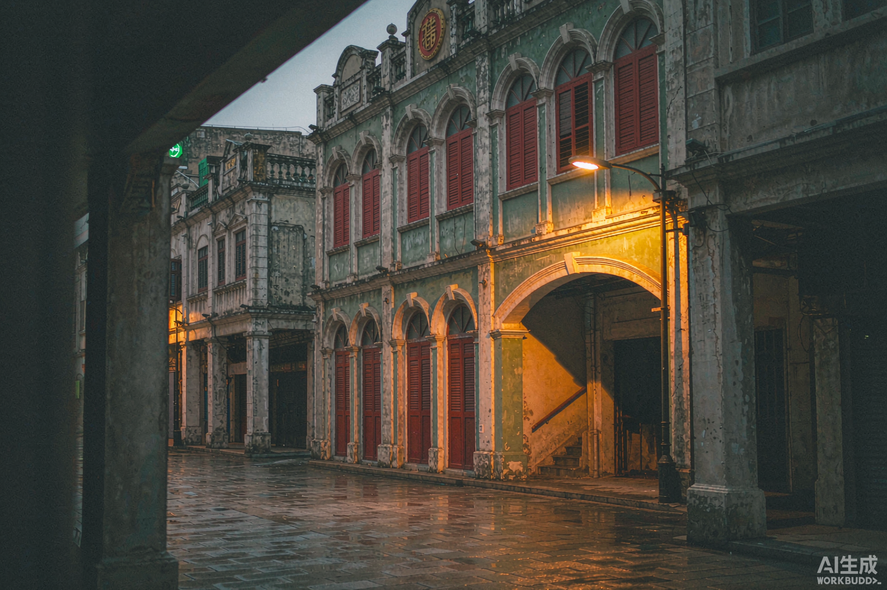
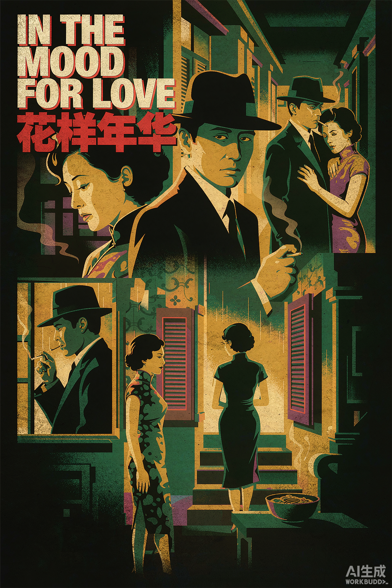

《花樣年華》觀後感
那道樓梯不在香港，在澳門：福隆新街的舊夢
《花樣年華》從來不是一部關於愛情如何開始的電影。王家衛把鏡頭對準的，是愛情怎樣被壓抑、被錯過、被小心翼翼地封存進歲月裡。一九六〇年代的香港，狹窄的走廊、共享的樓梯、隔壁飄來的飯菜香，還有兩個各自守著空洞婚姻的人，在咫尺之…


《花樣年華》從來不是一部關於愛情如何開始的電影。王家衛把鏡頭對準的，是愛情怎樣被壓抑、被錯過、被小心翼翼地封存進歲月裡。一九六〇年代的香港，狹窄的走廊、共享的樓梯、隔壁飄來的飯菜香，還有兩個各自守著空洞婚姻的人，在咫尺之間把心事藏了一年又一月。周慕雲與蘇麗珍的故事，全發生在「不應該」與「沒有發生」之間——那一種華語電影裡極少被拍得如此克制、如此華美的曖昧。
鮮少人留意，這座承載了整部片子呼吸節奏的老旅店與那道陰暗樓梯，其實不在香港，而在澳門。
王家衛當年為了找一處「像極了上世紀五六十年代」的樓梯，把部分場景從北京一路挪到了澳門。福隆新街上的新華大旅店（Sanva Hotel），因為那道光線昏沉、逼仄得教人屏息的樓梯，被攝製組一眼相中。周慕雲與蘇麗珍反覆上下樓、在走廊裡擦肩而過的那些畫面，許多正是在這棟澳門老旅店裡完成的。換句話說，我們在銀幕上記住的「香港」，有一部分其實是澳門的骨相。
這部片後來成為王家衛「情感三部曲」的中章，前有《阿飛正傳》，後有《2046》，後者同樣在澳門留下過足跡。二〇〇〇年坎城影展，梁朝偉憑周慕雲拿下最佳男演員；二〇二五年，距首映二十五年，王家衛推出導演特別版，多出的便利商店片段讓這對「周慕雲與蘇麗珍」在新世紀又一次短暫重逢。一部關於錯過的電影，自己卻從未被時代錯過。
而對澳門人來說，這部片最動人的，是它把一座城市的「含蓄」拍了出來。
福隆新街・新華大旅店：與《伊莎貝拉》同一扇門
若你讀過這個專輯裡寫《伊莎貝拉》的那篇，會發現一個奇妙的重合：彭浩翔讓少女碧欣長年棲身的新華大旅店，和王家衛讓周慕雲、蘇麗珍反覆走動的樓梯，是同一棟建築。
同一扇木門，一個裝下了世紀末澳門少女的孤獨與漂泊，一個收納了六十年代鄰居之間欲說還休的愛意。福隆新街這條一八七三年便存在的老街，綠色調的旅店、吱呀作響的木樓梯、昏黃溫柔的廊燈，本身就像一個不願醒來的舊夢。電影把這份舊夢借走，還回來時，已經鑲上了不同的心事。
對一個在澳門老城長大的人，這種重合不是巧合，而是一座城市留給電影的餘溫。你走過福隆新街，聞到紅窗門裡飄出的飯香，會忽然分不清：此刻是二〇〇〇年的香港，一九九九年的澳門，還是更遙遠的、某個不肯結束的夏天。
狹窄樓梯與鄰居：那些年一起上下樓的人
《花樣年華》最迷人的意象，是「樓梯」。
兩人同住一棟唐樓，日復一日在同一道樓梯上上下下，買面、倒垃圾、錯身、回望。王家衛用抽格、用慢鏡、用逼仄的構圖，把「近在咫尺卻不能靠近」拍成了一種生理的疼。那道新華大旅店的樓梯，不是佈景，是澳門老城真實的日常生活——多少澳門人的童年，就是在這樣的樓梯間跑上跑下，聽著隔壁的電視聲、飯香與爭吵長大。
鄰居之間那種「什麼都知道、什麼都不說」的默契，是澳門老社區真正的底色。電影裡的周太太們聚在走廊八卦，現實裡的澳門老街坊何嘗不是如此：誰家添了丁、誰家夫妻冷戰，一條街的人心裡有數，嘴上卻守著分寸。這種克制，不是冷漠，而是一種古老的體面。
旗袍、電影與六十年代：被封存的華美
蘇麗珍的二十多件旗袍，是這部片最公開的秘密。張叔平以美術指導之姿，把一個女人整年的心情縫進絲緞的顏色與花樣裡；她每日更衣，像在替那些說不出口的情緒更衣。杜可風與李屏賓的鏡頭，則把昏黃的燈、裊裊的煙、百葉窗的影，拍成一種會呼吸的懷舊。
這份華美底下，藏的是那個年代特有的含蓄：愛意不能宣之於口，只能繞著圈子，借劇本、借電話、借一次次的偶遇來試探。周慕雲寫武俠小說，蘇麗珍學做上海菜，兩人排演著「如果配偶真的是對方」的戲，演著演著，假戲裡長出了真心。
對今天的澳門而言，那個六十年代或許已經拆得差不多了。但電影替我們留下了它該有的樣子——不是旅遊明信片上的繁華，而是舊樓裡、窄巷中、一扇扇木門後，被認真對待過的日常。
人與城，同場隱忍的告白
《花樣年華》最動人的核心，是把一座城市的脾性，悄悄縫進了一則關於剋制的愛情裡。
澳門這座小城，向來擅長把濃烈的情感收進溫吞的日常。我們不張揚、不喧嘩，像蘇麗珍那樣把心事疊進旗袍的褶皺，像周慕雲那樣把話說到嘴邊又咽回去。那句「如果多一張船票，你會不會跟我一起走」，是華語電影裡最著名的未竟之問——它不問結果，只問願不願意。
多年以後，周慕雲把秘密說給吳哥窟的石洞聽，讓風把話帶走。而澳門，則把這些未竟的、含蓄的、來不及說出口的情感，一格一格收進老街的磚牆與樓梯的木紋裡。
當暮色又一次籠上福隆新街，風吹過新華大旅店那道熟悉的樓梯，我們終於明白：
有些愛，不必擁有；有些城，因為懂得收斂，才顯得格外深情。